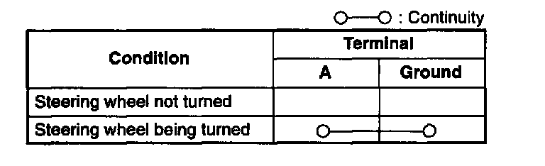

Power Steering Pressure Switch: Testing and Inspection
POWER STEERING PRESSURE SWITCH INSPECTIONInspection of Continuity
NOTE:
- Perform the following test only when detected.
1. Inspect as follows if power steering is inoperative.
- POWER STEERING FLUID INSPECTION
2. Disconnect the PSP switch connector.
3. Start the engine.
4. Inspect for continuity between PSP switch terminal and a ground by using an ohmmeter.

Specification
5. If not as specified, replace the PSP switch. If PSP switch is okay but PID value is out of specification, inspect as follows:
Open circuit
- Power circuit (PSP switch connector terminal and PCM connector terminal 1G through common connector.)
- Ground circuit (PSP switch ground circuit.)
Short circuit
- PSP switch connector terminal and PCM connector terminal 1G through common connector to ground.
6. Reconnect the PSP switch connector.